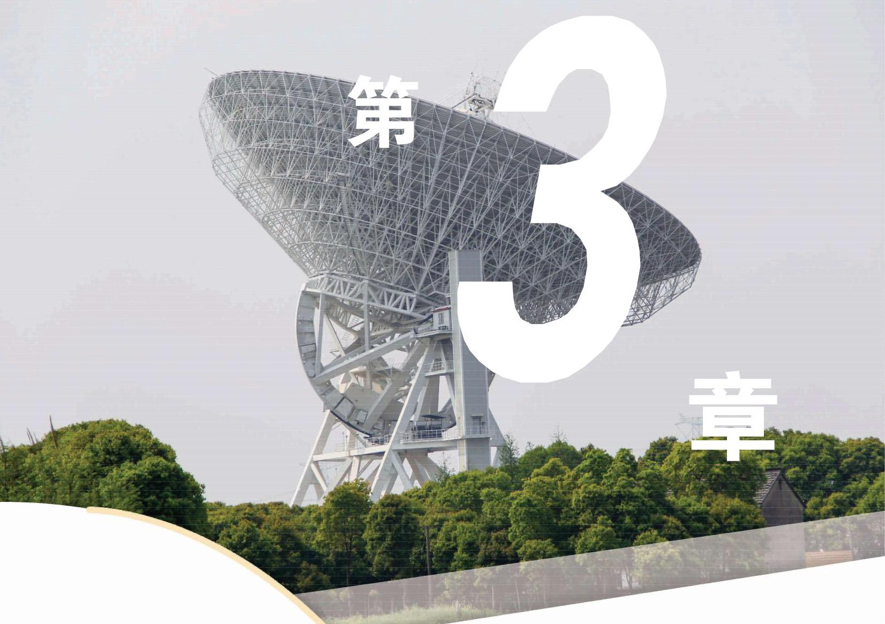

例题 1
例 1 ( 1 )求 的 5 次方根；
( 2 )求 81 的 4 次方根.
学生阅读版 / 沪教版高中数学
必修第一册
第3章幂、指数与对数 · 保留教材主线与原题
教材与正式教参整合

关于幂我们并不陌生, 在初中时已经学过正整数指数幂及其基本的运算性质，并经历了将正整数指数幂推广到整数指数幂的过程. 本章通过定义分数指数幂，将指数从整数拓展到有理数，再引入无理数指数幂，最终将指数从有理数拓展到实数. 这为下一章用幂函数描述变量之间的相应关系作好准备.
本章还将学习对数这一个新的概念, 它是指数运算的逆运算. 16 世纪末，随着当时天文、航海及工程实践的迅速发展，大量多位数乘除及开方的计算困扰着那时的科学家和工程师. 在简化计算的迫切需求下, 对数这个概念得以诞生, 并在实际计算中得到广泛应用. 现在, 功能强大的现代计算器使多位数的乘除及开方计算变得非常方便, 对数用于简化计算的功能已经完成了其历史任务. 但是, 对数这个概念及对数函数的种种性质在现代数学和其他科学领域中的作用却有增无减, 一直占据着重要的位置.
在初中我们已经学过正整数指数幂的定义和运算性质.
如果 是一个实数, 是一个正整数,那么称
为 的 次幂. 正整数指数幂满足如下的运算性质:
对任意给定的实数 及正整数 ,有
(1) ;
(2) ；
(3) .
为了定义整数指数幂，我们在保证上述幂的运算性质仍然成立的条件下定义 及 ( 为正整数).
假设性质 (1) 对所有的整数 均成立,则当 时, 有
所以,当 时, .
当 时,有
所以,当 时, .
因此,当 时,可以定义
这样,可以证明对任意给定的非零实数 及整数 ,上述幂的运算性质 (1) 至 (3) 仍然成立.
在定义了整数指数幂后, 就会问: 能否定义有理数指数幂呢? 答案是肯定的. 为此先拓展根式的概念.
同底数的幂相乘， 底数不变, 指数相加.
当 是奇数时,由于正数的 次方是一个正数,负数的 次方是一个负数,因此 的 次方根是唯一存在的,且可用 表示. 例如,因为 ,所以 ; 因为 ,所以
但当 是偶数时,由于互为相反数的两个数的 次方是同一个数,因此一个正数的 次方根有两个,它们互为相反数. 这时,正数 的正的 次方根用 表示,而负的 次方根用 表示,它们可以合并简写成 . 例如,16 的 4 次方根可以表示为 及 ,简记为 . 显然, 负数没有偶数次方根.
0 的任何次方根都是 0,记作 .
例 1 ( 1 )求 的 5 次方根；
( 2 )求 81 的 4 次方根.
例 2 求下列各根式的值:
(1) ；
(2) .
当 为奇数时,
当 为偶数时,
(1) ； (2) (其中 ).
为了定义有理数指数幂, 我们首先定义正数的有理数指数幂, 使得整数指数幂的三条运算性质对有理数指数幂仍然成立.
设 为有理数,我们定义 .
当 ,而 是正整数时,若 ,则 ,这种情况比较特殊,无需定义; 若 大于 1,则定义 ,即为 的 次根式,它是方程 的唯一正数解.
当 ,而 是一个整数, 是一个大于 1 的整数时, 定义
可以证明,当 且 为整数及 为大于 1 的整数时,总成立 .
当 为有理数时,它总可表示为两个互素整数的商 ,其中 是整数,而 是正整数,可定义 .
根据 次幂的定义,有 . 再由分数指数幂的定义与整数指数幂的运算性质 (2), 有
因此,也可以把 等价地定义为
利用整数指数幂的运算性质(1)至(3)，可以证明这三条性质对有理数指数幂仍然成立. 我们也可以证明以下的幂的基本不等式: 当实数 ,有理数 时,不等式 成立.
例 3 求下列各式的值:
(1) ；
(2) .
例 4 用有理数指数幂的形式表示下列各式(其中 ): (1) ；
为大于 1 的整数).
当 且 是正奇数时, 存在唯一的实数 ,使得
此时 能被定义.
当 且 是正偶数时, 因为不存在实数 ,使得
故不能定义 .
当 且 是正整数时, 也可定义
一般地,在 为大于 1 的整数,且 为整数时,对所有使得 有意义的实数 ,都可定义
(2) ；
(3) .
例 5 化简下列各式:
(1) (其中 )；
(2) (其中 ).
(1)100 ；
(2) .
(1) ；
(2) .
(1) (其中 )；
(2) (其中 ).
1.(1)求一64的立方根； (2)求 256 的 4 次方根.
(1) ； (2) ；
(3) ； (4) .
(1) ； (2) ；
(3) ； (4) .
(1) ； (2) ；
(3) ； (4) .
(1) ； (2) ；
(3) ； (4) .
(1) ； (2) ；
(3) ；
(4) .
(1) ；
(2) .